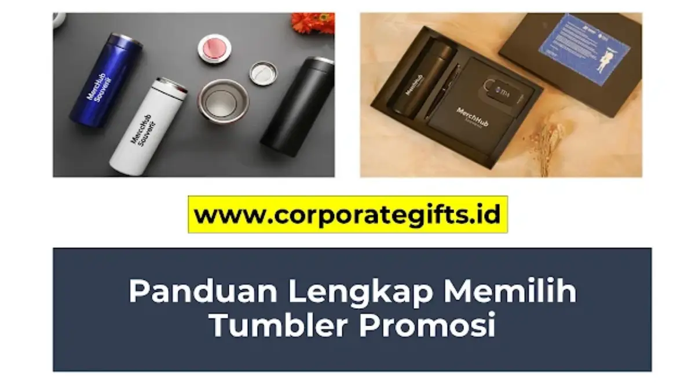

Mengapa Tumbler Custom Sangat Populer untuk Promosi?
Corporate Gifts ID - Tumbler custom adalah salah satu pilihan souvenir kantor dan cinderamata perusahaan paling populer dan efektif saat ini. Mengapa? Karena barang ini sangat fungsional, digunakan setiap hari, dan aktif mendukung gerakan ramah lingkungan (eco-friendly). Sebuah botol tumbler dengan logo instansi Anda di atas meja kerja klien bertindak sebagai media promosi pasif yang bekerja terus-menerus selama berbulan-bulan bahkan bertahun-tahun.
Namun, memilih tumbler promosi tidak boleh sembarangan. Setiap jenis bahan memiliki kelebihan, kekurangan, dan kecocokan budget yang berbeda. Sebagai bagian esensial dari merchandise perusahaan, botol minum berlogo harus mampu merepresentasikan kualitas dan nilai profesionalitas instansi Anda secara konsisten.
Poin Kunci Pemilihan Tumbler Custom:
- Daya Tahan Promosi Jangka Panjang: Digunakan berulang kali oleh penerima sehingga menghasilkan ribuan impresi brand secara organik.
- Variasi Material Fleksibel: Tersedia dalam 5 pilihan bahan utama (Stainless Steel SUS 304, Plastik Tritan, Aluminium, Kaca Borosilikat, dan Bambu Alami).
- Dua Metode Cetak Utama: Laser Grafir permanen untuk bodi logam/bambu, serta UV Printing full color untuk desain grafis berwarna.
- Mendukung Nilai ESG Korporat: Mengurangi sampah botol plastik sekali pakai selaras dengan inisiatif keberlanjutan global.
5 Jenis Bahan Tumbler Promosi yang Paling Populer
Untuk membantu tim procurement dan panitia event menentukan pilihan terbaik, kenali 5 jenis bahan tumbler promosi berikut beserta kelebihan dan fungsinya:
1. Tumbler Stainless Steel (Vacuum Flask / Termos)
Stainless steel adalah primadona dalam dunia tumbler promosi. Terutama jenis Double Wall Vacuum Insulated yang mampu menjaga suhu minuman panas hingga 8-12 jam dan minuman dingin hingga 18-24 jam. Standar mutu terbaik menggunakan food grade SUS 304 atau SUS 316 yang tahan karat dan higienis.
Kelebihannya meliputi tampilan yang sangat mewah, awet bertahun-tahun, serta tidak meninggalkan bekas rasa atau bau. Sangat cocok dijadikan hadiah eksklusif jajaran manajemen, corporate gift akhir tahun, atau souvenir gathering bergengsi.
2. Tumbler Plastik (BPA-Free / Tritan)
Tumbler plastik adalah pilihan paling hemat biaya dan sangat ideal untuk acara berskala massal. Material plastik premium seperti Tritan copolyester memiliki kejernihan menyerupai kaca tetapi anti-pecah dan 100% bebas dari BPA berbahaya.
Karakternya yang ringan, pilihan warna warni yang luas, serta harga yang sangat ekonomis menjadikannya kombinasi favorit dalam paket seminar kit instansi, fun run perusahaan, dan orientasi karyawan baru.

Ragam pilihan material tumbler custom mulai dari stainless steel vacuum flask, plastik Tritan, hingga edisi kayu bambu.
3. Tumbler Aluminium
Tumbler aluminium memiliki karakter bobot yang sangat ringan mirip plastik, namun memiliki sentuhan fisik logam yang kokoh. Umumnya didesain dengan model botol sport berkarabiner yang praktis dikaitkan pada ransel kerja atau sepeda.
Meskipun sebagian besar tipe aluminium single wall tidak memiliki fitur penahan suhu panas berdurasi lama, botol ini sangat populer untuk event olahraga korporat, outing kantor lapangan, dan komunitas outdoor.
4. Tumbler Kaca (Glass Tumbler)
Bagi instansi yang menginginkan cinderamata dengan nilai higienitas murni, tumbler berbahan kaca Borosilikat adalah jawaban sempurna. Kaca bersifat non-reaktif sepenuhnya sehingga tidak akan mengubah cita rasa kopi specialty, teh herbal, maupun infused water.
Untuk meminimalisir risiko benturan fisik, tumbler kaca modern biasanya dilengkapi dengan outer sleeve pelindung dari silikon food grade atau balutan kayu alami yang estetik.
5. Tumbler Bambu / Eco-Friendly Material
Seiring tingginya komitmen perusahaan terhadap target ESG (Environmental, Social, and Governance), tumbler berlapis bambu alami menjadi tren terdepan dalam kategori souvenir custom premium. Bagian dalam biasanya tetap menggunakan stainless SUS 304 berinsulasi ganda, sementara kulit luar dibalut serat bambu alami yang unik.
Tabel Perbandingan Karakteristik Bahan Tumbler Promosi
Simak ringkasan komparasi teknis berikut untuk mempermudah perhitungan alokasi anggaran procurement kantor Anda:
| Material Bahan | Ketahanan Suhu | Daya Tahan Fisik | Kesan Branding | Kisaran Harga |
|---|---|---|---|---|
| Stainless Steel SUS 304 | Sangat Baik (12 - 24 Jam) | Sangat Tinggi (Anti-Pecah) | Mewah, Profesional, Elegan | Rp45.000 - Rp125.000 |
| Plastik Tritan BPA-Free | Rendah (Suhu Ruang/Dingin) | Tinggi (Ulet & Fleksibel) | Kasual, Dinamis, Modern | Rp18.000 - Rp45.000 |
| Aluminium Sport | Sedang (Single Wall) | Tinggi (Ringan & Kuat) | Sporty, Aktif, Outdoor | Rp25.000 - Rp55.000 |
| Kaca Borosilikat + Sleeve | Sedang (Tahan Termal) | Sedang (Rentan Benturan Keras) | Higienis, Cantik, Bersih | Rp35.000 - Rp75.000 |
| Bambu Alami + SUS 304 | Sangat Baik (Vacuum Double Wall) | Tinggi | Eco-Friendly, Sustainable, Unik | Rp65.000 - Rp145.000 |
Teknik Cetak Logo pada Tumbler Promosi
Kualitas aplikasi logo pada badan tumbler menjadi kunci utama keberhasilan cinderamata. Di fasilitas produksi kami, terdapat beberapa opsi teknik cetak presisi:
- Laser Grafir (Engraving): Menggunakan sinar laser fiber untuk mengikis lapisan cat bodi botol. Memberikan hasil permanen seumur hidup, anti-luntur, dan berpenampilan monokrom perak metalik yang sangat eksklusif.
- UV Printing Full Color: Menggunakan tinta khusus yang dikeringkan dengan sinar ultraviolet. Mampu mereproduksi logo bergradasi warna kompleks dengan resolusi tajam dan tahan gores berkat lapisan vernis.
- Sablon Presisi / Pad Printing: Sangat efisien dan hemat biaya untuk pemesanan tumbler plastik dalam kuantitas ribuan unit dengan 1-2 warna solid.
Tips Memilih Tumbler Custom untuk Souvenir Perusahaan
Sebelum menerbitkan Purchase Order (PO), pastikan tim Anda memperhatikan 4 faktor penting berikut:
- Kenali Profil Penerima: Pilih model vacuum flask eksekutif untuk mitra VIP, dan pilih botol Tritan atau sport tumbler untuk peserta pelatihan massal.
- Pastikan Sertifikasi Food Grade & BPA-Free: Keamanan konsumsi adalah prioritas mutlak yang menyangkut reputasi kesehatan korporat.
- Perhatikan Kapasitas Volume: Ukuran 500 ml adalah standar paling ideal untuk mobilitas kerja harian di kantor maupun perjalanan dinas.
- Padukan dengan Kemasan Eksklusif: Lengkapi tumbler dengan custom hardbox atau canvas pouch dalam paket hampers perusahaan agar nilai cinderamata berlipat ganda.
Kesimpulan dan Konsultasi Pengadaan
Tumbler custom souvenir perusahaan adalah investasi promosi yang menggabungkan fungsionalitas tinggi, estetika modern, dan pesan ramah lingkungan. Dengan memilih material yang tepat dan teknik cetak logo yang presisi, cinderamata ini akan menjadi duta visual yang memperkuat reputasi brand Anda setiap hari.
Ingin melihat sampel fisik produk, simulasi mockup logo 3D, atau penawaran harga grosir terbaik? Kunjungi halaman katalog produk resmi kami atau langsung ajukan estimasi anggaran melalui formulir penawaran harga (RFQ) bersama tim spesialis CorporateGifts.ID.